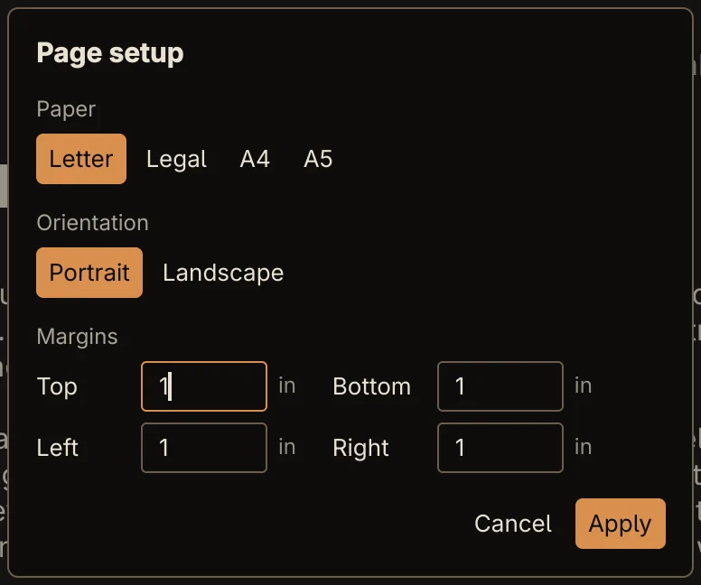
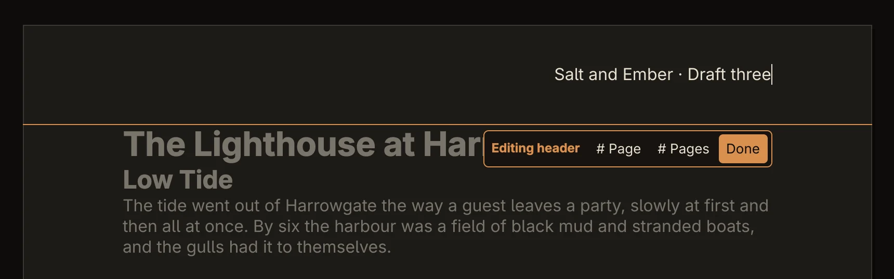
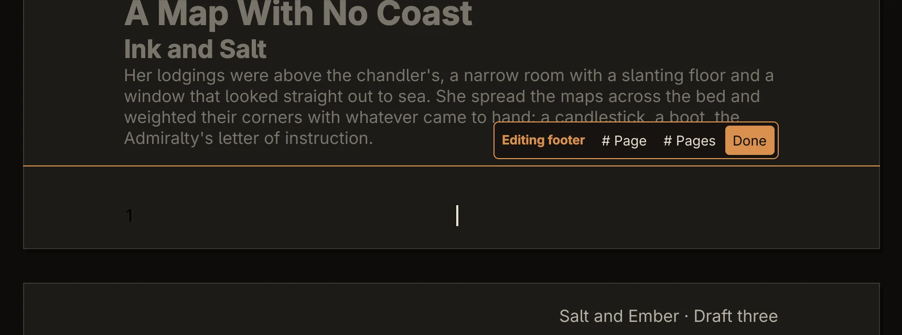

Guide
Pages, headers and footers
Rune shows your document on real pages, at its real paper size, the way it will print.
Page setup


Open File → Page setup…, or Ctrl+K and Page setup….
- Paper: Letter, Legal, A4 or A5. Hover over one to see its size. A document with another size shows it as Custom.
- Orientation: Portrait or Landscape.
- Margins: Top, Bottom, Left and Right. They're in inches if your locale uses Letter paper and in centimetres otherwise. A field turns red if its value can't be used, and Apply waits until it can.
Apply, or Return in a margin field, applies the change as one undo step. Escape cancels.
A new document uses Letter paper in the United States, Canada, Mexico and a few other countries that use it, and A4 everywhere else, with 1-inch (2.54 cm) margins.
The page layout is saved in the file, in .odt and in .docx, so Word and LibreOffice open it with the same paper and margins.
The page view
Each page is drawn at its paper size, with a gap between pages. In a window narrower than a page, the pages shrink to fit; they are never enlarged past their real size. The status bar shows Page N of M for the page the cursor is on.
Headers and footers
Hover over the empty top or bottom margin of a page and Rune offers Double-click to add a header (or footer). Double-click to start editing it in place. You can also use File → Edit header or Edit footer.


While you edit a header or footer, the edit bar offers:
- # Page: inserts the page number. Each page shows its own.
- # Pages: inserts the total number of pages.
- Done: back to the document. Escape, or a click on the page, does the same.
The toolbar's bold, italic, underline, font, size, colour and alignment buttons work on the header or footer while you edit it. It's the same on every page, apart from its page numbers. It sits centred in its margin. If it grows taller than the margin, the margin grows to make room when you finish.
A header or footer keeps its own undo history while you edit it, so Ctrl+Z there undoes only header or footer changes.
Page numbers


The quickest way to number pages is Ctrl+K and Page numbers. If the footer is empty, Rune puts a centred page number in it, then opens the footer for editing so you can add to it, for example Page number of pages with # Page and # Pages.
Headers and footers are saved with real page number fields, so Word and LibreOffice number the pages in the same places.
Not yet One header and one footer per document: no different first page, no different odd and even pages, and no section breaks with their own margins or numbering. A file opened with a different first-page header shows only the main one, and the other is dropped when Rune saves it.